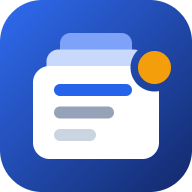

Backlog Tool alerts
The alerts of Backlog Tool on this phone
Checking this phone...
Open the link from Backlog Tool
On the computer: Backlog Tool settings - Phone - Copy the link, send it to yourself and open it here.
First add it to the Home Screen
- Tap Share at the bottom of Safari.
- Tap Add to Home Screen, then Add.
- Open Backlog from the Home Screen and continue there.
iPhone gets alerts from web apps only from the Home Screen (iOS 16.4 or newer).
This browser cannot receive alerts
On Android open this link in Chrome. On iPhone use Safari and add it to the Home Screen.
Turn on the alerts
Allow notifications when the phone asks. Only this phone can read the alerts: they are encrypted on the computer.
Notifications are blocked
Allow notifications for this page in the settings of the phone (Android: Chrome - Site settings - Notifications; iPhone: Settings - Notifications - Backlog), then reload it.
Last step: the code for the computer
Send this code to the computer (Share to Teams or e-mail to yourself), then paste it in Backlog Tool settings - Phone - Paste the code here.
Last alerts
- None yet.